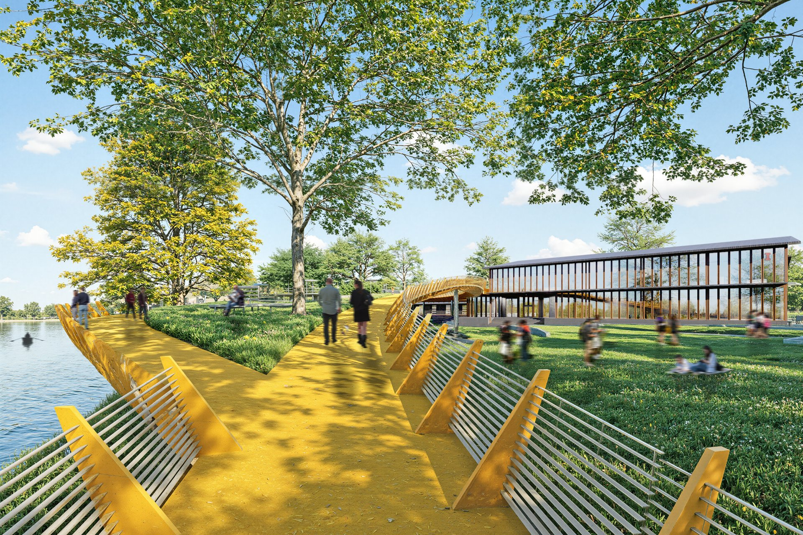
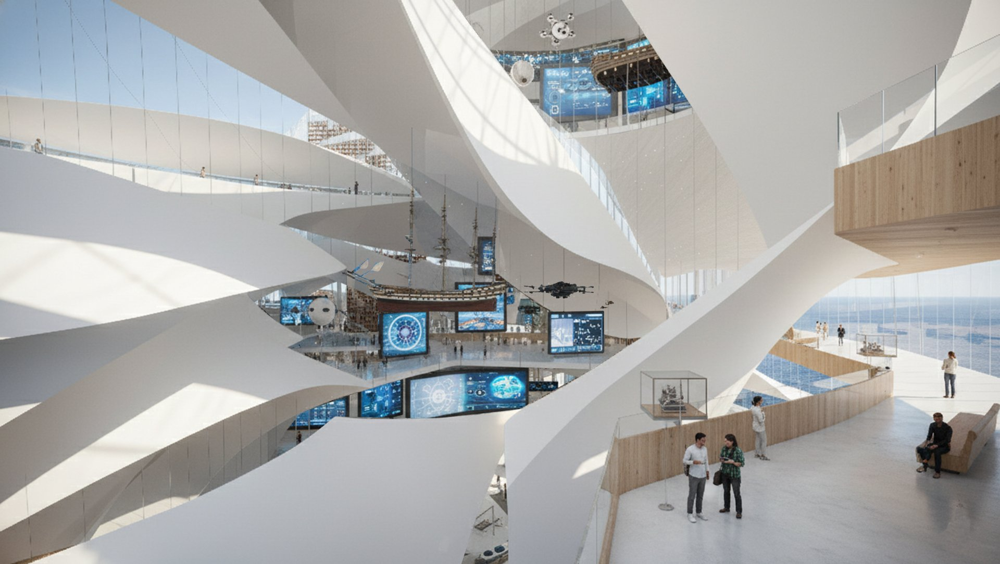
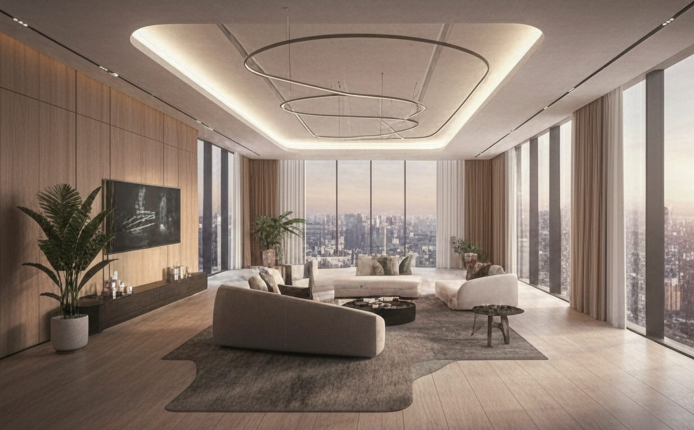

Floating Horizon
Rowing Centre · Clinton Lake, Illinois
An elevated steel ramp over water paired with an engineered wood boathouse, framing the lakeside landscape as both stage and shelter.

Ember Negative
Fire Station · Texas, USA
A fire station exploring absence and material contrast — where carved negative space defines programme, threshold, and civic presence.

Nautical
Maritime Centre · Jeju, South Korea
A maritime cultural centre rooted in Jeju's coastal identity, where fluid form and programme celebrate the island's deep relationship with the sea.

Recycling Park
Waste Management & Urban Park · Dhaka
A thesis project transforming 133 acres of Dhaka's waste infrastructure into public parkland — a top-50 finalist in the Tamayouz International Award.

Skywalker
Skyscraper · Dhaka, Bangladesh
A high-rise residential tower in Teigaon engaging Dhaka's vertical density through layered setbacks, shared sky gardens, and a rhythmic facade.

Interplay
Apartment Building · Dhaka, Bangladesh
A residential complex in Bashundhara where light, courtyard, and spatial rhythm create a dialogue between private living and shared community.

Medtech
Hospital · Mymensingh, Bangladesh
A 116,000 sq ft medical facility designed around clarity of wayfinding, natural light, and patient-centred spatial organisation.

Professional Work
Professional & Academic Projects
A selection of professional and academic work spanning design exploration, visualization, and applied architectural practice.